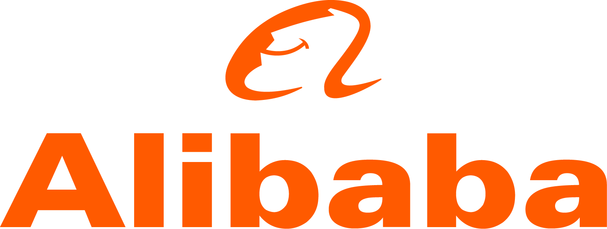

University of Electronic Science and Technology of China
2023 – 2027 (expected)
B.Eng. in Software Engineering · GPA 3.68/4.00 (85.87/100) · IELTS 7.5
I am a final-year undergraduate in Software Engineering at UESTC, working on generative models, world models, and vision-language-action models for autonomous driving. I am currently a research assistant at Tsinghua University with Prof. Xianyuan Zhan; previously I worked on driving world models and end-to-end planning at NIO, and on VLA decision-planning systems at Alibaba Cainiao.
Generative AI and end-to-end autonomous driving.

Alibaba Group — Cainiao Autonomous Driving Lab Dec 2025 – Feb 2026Vision-language-action models for autonomous driving decision and planning.
Multi-view video world models and end-to-end planning for autonomous driving.
* Equal contribution
Synced every 15 min ·